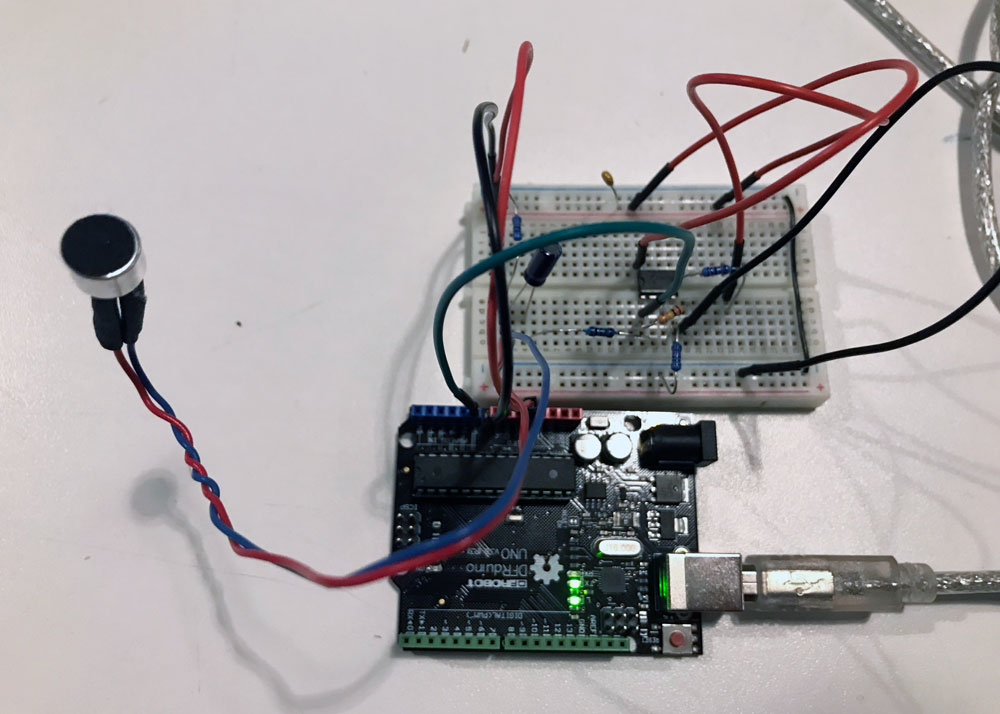
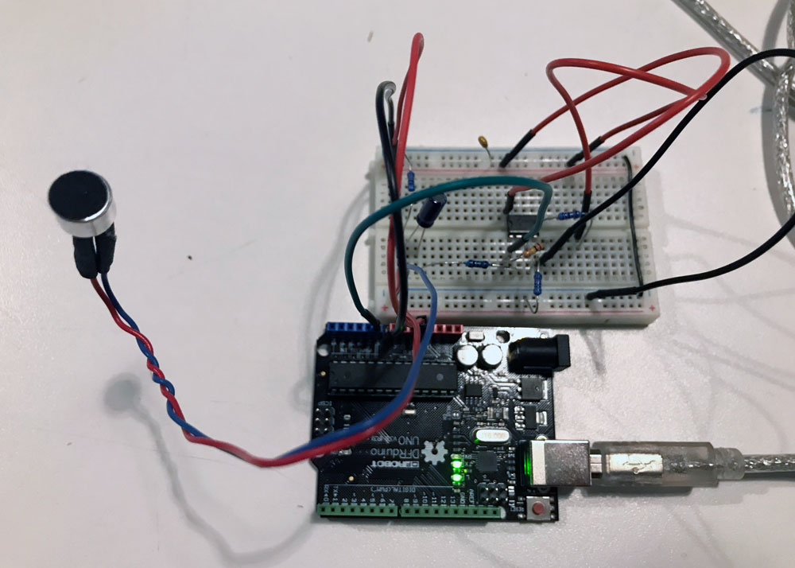

Week 5: Op Amp for Microphone [LAB]
Oct 8, 2018
For this week's lab, I decided to solve the problem that I fasted with my Talk Seesaw that I made for last week's lab. The issue that I faced was that the microphone inputs were not sensitive enough to detect whether someone was talking or not. After an office hour with Danny Rozin, I discovered that I needed to build an operational amplifier for my microphones. After researching for diagrams online, I found this tutorial on building the LM358 microphone amplifier. I built mine based on the diagram provided on the tutorial website.
Materials used:
- Electret Microphone (bought from here)
- 1kΩ Resistor
- 10kΩ Resistor * 3
- 100kΩ Resistor
- 10uF Capacitor
- 100nF Capacitor
- LM358 Operational Amplifier
- Arduino Uno
 

After I had built my circuit, I printed out the analog in values on the serial monitor and realized that the values were "popping". Then I went back to read more on the tutorial blog that I was following to build the circuit (because I remembered that the writer found the result of this circuit quite decent), and it turns out that the raw input of the microphone is SUPPOSED to fluctuate with (theoretically) 512 as the 0 base. So, in order for me to actually visualize how the numbers were coming in, I decided to use Processing to visualize these values.
In the above video, the white dots are visualization of the raw readings. After just simply visualizing the raw data itself, I realized that what I needed for the Talk Seesaw was to measure the amplitude. In order to measure the amplitude, I had to map the raw analog readings to a float number between -1 and 1, then to get the average of the last 10 absolute readings of the mapped amplitude data. In the above video, the amplitude is represented as red dots. Below is my code for the visualizer built using Processing.
Processing code (& Arduino code as comments) for visualizing raw mic input & calculated amplitude:
After I was able to visually check that I was calculating the amplitude correctly, I moved the amplitude calculation code from Processing to Arduino. Below code uses the calculated amplitude value for brightness of the LED connected on digital out (PWM) pin 9. I had to create an if statement to ignore amplitude values if it was less than 0.3, because this seemed to be either the background noise or the noise from the sensor itself.
Arduino code for measuring mic amplitude:
Stuff I learned:
- Op amplifiers really did solve my problem of amplifying the microphone input. It is not amazingly sensitive, but it actually does more than what I expected it to do.
- Visualizing the numbers on Processing really helped me think about what sort of numbers are being received by the arduino from the sensor. I think I will use this tactic more often.
Stuff I'm still not sure of:
- I used the circuit diagram from this tutorial on building the LM358 microphone amplifier, and it seems like it works. I'm still not really fully sure of what exactly is happening on my circuit!